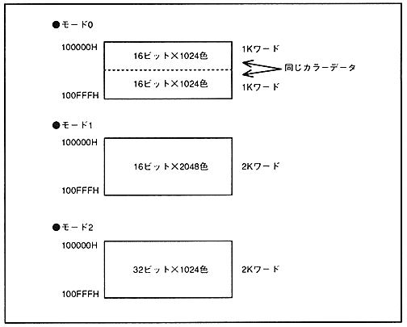
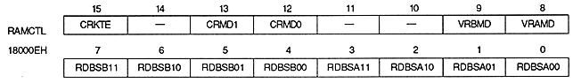

Color data written to the color RAM is shown in Figure 3.10.
Figure 3.10 Color data in color RAM

■ RAM control register
The RAM control register specifies the VRAM bank division, the purpose of use of the rotary scroll screen VRAM, and the color RAM mode. This is a 16-bit readable / writable register located at 18000EH. The value is cleared to 0 after power-on or reset, so be sure to set it.

Color RAM coefficient table enable bit : Color RAM coefficient table enable bit (CRKTE), bit 15